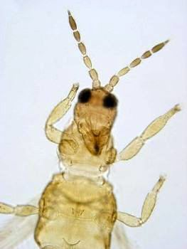
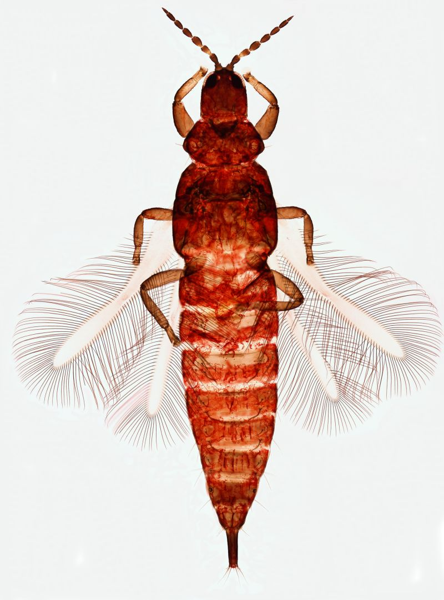

s± to drobne owady, wielko¶æ gat. europejskich 0,5-5mm (najczê¶ciej: 1-2 mm), najwiêkszy w Polsce Megathrips lativentris (ok.7mm), tropikalny - 14mm.; cia³o w±skie, sk³ada siê z 3 dobrze wyodrêbnionych tagm, barwa cia³a od jasno ¿ó³tej, poprzez brunatn±, do prawie czarnej.

wiêkszo¶æ to gatunki tropikalne, znanych jest ok. 7000 gatunków na ¶wiecie, z Europy wykazano 600, w Polsce obecnie 220 gat. ( w tym 28 gatunków odnotowanych tylko raz )
rz±d Thysanoptera dzieli siê na 2 podrzêdy: Terebrantia (=wciornastki pok³ade³kowe; samice posiadaj± na koñcu odw³oka pok³ade³ko s³u¿±ce do nacinania tkanek ro¶linnych i sk³adania jaj oraz silnie u¿y³kowane skrzyd³a) i Tubulifera (=rurkowe; maj± rurkowate zakoñczenie odw³oka u obu p³ci i skrzyd³a pozbawione u¿y³kowania). Pierwszy z nich dzili siê na 8 rodzin, reprezentowanych na ¶wiecie przez ponad 2300 gat. (Mound & Morris 2004). W Polsce wystêpuj± jedynie 3 rodziny: Aeolothripidae (10 gat), Melanthripidae (3 gat) i Thripidae (137 gat). Gatunki z podrzêdu Tubulifera nale¿± do jednej rodziny Phlaeothripidae ; na ¶wiecie - ok. 3200 gat., w Polsce - 67.

owady te spotykane s± najczê¶ciej na kwiatach i li¶ciach ró¿nych gat. ro¶lin (g³ównie zielnych), wiêkszo¶æ lubi ¿yæ w ukryciu, s± cieniolubne, niektóre ¿yj± gromadnie, zdarzaj± siê masowe pojawy gdy zmieniaj± siê warunki ¶rodowiska np. gdy opuszczaj± miejsce zimowania podczas wzrostu temperatury wczesn± wiosn±. Szybko biegaj± i skacz± lub poma³u pe³zaj± z wygiêtym do góry odw³okiem, wykorzystuj± lot i pr±dy powietrza do przemieszczania siê, s± wilgociolubne. Wystêpuj± na ca³ym ¶wiecie, najwiêcej w tropikach, ich optimum rozwojowe to blisko 25 st.C, osobniki rozwijaj±ce siê w ni¿szych temperaturach s± ciemniejsze i wiêksze z dominacj± form krótkoskrzyd³ych lub bezskrzyd³ych
wiêkszo¶æ przedstawicieli z podrzêdu Terebrantia to fitofagi o k³uj±co-ss±cym aparacie gêbowym, zamieszkuj±ce ró¿ne czê¶ci ro¶lin. ¯ywi± siê nektarem, sokiem py³ku kwiatowego, li¶ci i m³odych pêdów oraz tkankami okwiatu. Niektóre (zw³aszcza Tubulifera ) od¿ywiaj± siê grzybni± i zarodnikami grzybów wystêpuj±cych pod kor± drzew i krzewów (tzw. gatnki mikofagiczne). Nieliczne z rodzajów Aeolothrips i Scolothrips s± drapie¿nikami - ¿ywi± siê g³ównie mszycami i larwami innych owadów. Oko³o 300 gatunków z podrzêdu Tubulifera , g³ównie tropikalnych, mo¿e tworzyæ galasy.